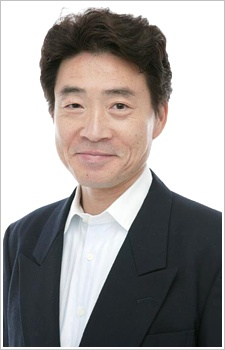

Bin Shimada is a Japanese voice actor. He is affiliated with Aoni Production. He voiced Silver Heart in Mysterious Joker and Zangulz in Slayers.
- Gender: Male
- Birthday: November 20, 1954
- Hometown: Niigata, Japan

|  |
Bin Shimada is a Japanese voice actor. He is affiliated with Aoni Production. He voiced Silver Heart in Mysterious Joker and Zangulz in Slayers.
|
|---|
 |
Yuichiro Kumada |
|
Yuichiro Kumada is a young man who helps aout at the Hikawa Shrine. His family is very rich and even have a lodge in the mountain. He is very loyal to Rei's family and remains faithful to protect her. |